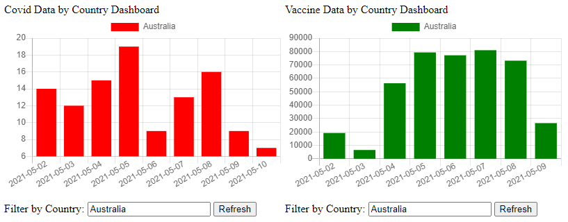

Visualization¶
Visualization leverages APIs using Django rest framework and JSON responses for generating the charts, current trend view for both Covid and Vaccine data.
queryset_covid = CovidData.objects.all().order_by("country")
for covid_entry in queryset_covid:
country.append(covid_entry.country)
labels.append(covid_entry.date)
data_covid.append(covid_entry.confirmed)
queryset_vaccine = VaccineData.objects.filter(
country=covid_entry.country, date=covid_entry.date
).order_by("country")
if queryset_vaccine.exists():
for vaccine_entry in queryset_vaccine:
data_vaccine.append(vaccine_entry.doses_administered)
else:
data_vaccine.append(0)
return JsonResponse(
data={
"country": country,
"labels": labels,
"data_covid": data_covid,
"data_vaccine": data_vaccine,
}
)
The data is visualized using Django app and chart JS
